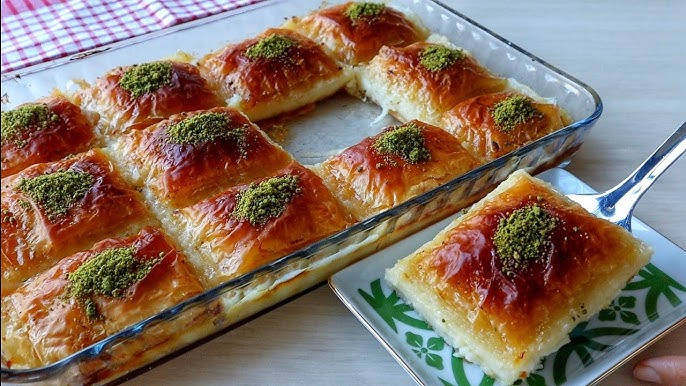

Laz Böreği
Laz böreği; yufka, tereyağı, muhallebi ve şerbet ile yapılan bir tatlı çeşididir. Türkiye'de Doğu Karadeniz bölgesinde ve özellikle Lazların yaşadığı Artvin, Rize ve Trabzon illerinde yapılır.

Tarif
Malzemeler
- 1 paket baklavalık yufka (42 adet)
- Sıvı yağ
- 250g tereyağı
- 2 adet yumurta
- 4 su bardağı süt
- 5 yemek kaşığı un
- 1 yemek kaşığı nişasta
- 1 su bardağı şeker
- 1 paket vanilya
- 1 çay kaşığı karabiber
- 2,5 su bardağı şeker
- 2 su bardağı su
- Yarım limon suyu
Yapılışı
- İlk olarak tatlımızın şerbetini hazırlayalım. Bunun için uygun bir tencereye şeker ve suyu alarak şeker eritene kadar karıştıralım. 15 dakika kadar şerbetimizi kaynamaya bırakalım.
- Şerbetimiz kaynadıktan sonra limon suyunu ekleyelim ve 5 dakika daha kaynattıktan sonra ocağı kapatıp şerbetimizi soğumaya bırakalım.
- Muhallebisi için tenceremize yumurtalarımızı alarak tel çırpıcı ile karıştıralım, bir taraftan sütümüzü de yavaş yavaş ekleyelim
- Un, nişasta, şeker, vanilya ve karabiberi ilave ederek pürüzsüz bir kıvam alana kadar karıştıralım.
- Koyulaşıp kıvam alan muhallebimizi ocaktan alalım ve daha hızlı soğuması için ayrı bir kaseye aktaralım. Kaseminizin üzerini, muhallebiye değecek şekilde streçleyelim.
- Baklavalık yufkalarımızı tezgaha alalım ve kullanacağımız fırın kabı boyutunda keselim. Ben 27*40 cm boyutunda dikdörtgen borcam kullandım. Kestikten sonra baklavalık yufkaların üzerine nemli bir bez örtelim ki kurumasın.
- Fırın kabımızı sıvı yağ ile hafifçe yağladıktan sonra 3 adet baklavalık yufkayı fırın kabımıza yerleştirelim ve üzerine erittiğimiz tereyağından sürelim. Bu şekilde 21 adet yufkayı her 3 yufkada arasına tereyağı sürerek yerleştirelim. Son yufkamızın üzerine tereyağı sürmeyelim.
- Muhallebimizi yufkanın üzerine boşaltalım ve güzelce yayalım.
- Üst kısma da tekrar 21 adet yufkayı her 3 yufkada 1 arasına tereyağı sürerek yerleştirelim.
- En son kata da bolca yağ sürdükten sonra böreğimizi dilediğimiz boyutta keselim.
- Ardından 180°C fırında üzeri kızarana kadar yaklaşık 35 dakika pişmeye bırakalım.
- Fırından aldığımız ve ilk sıcağı çıkan böreğimizin üzerine soğuyan şerbeti gezdirelim ve en az 2 saat dinlenmeye bırakalım.
- Şerbetini güzelce çeken böreğimizi kestiğimiz yerlerden tekrar keserek servis edelim.
.png)